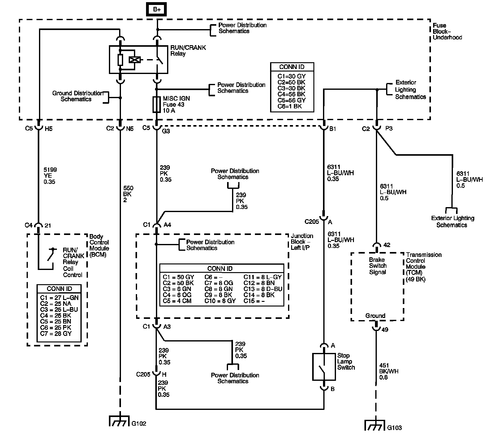

4L80-E / 4L85-E Automatic Transmission
DTC P0719

Circuit Description
The stop lamp switch indicates the brake pedal status to the transmission control module (TCM). The brake switch is a normally-closed switch that supplies battery voltage on the stop lamp supply voltage circuit to the TCM. Applying the brake opens the stop lamp switch, interrupting voltage to the TCM. When the brake is released, the TCM receives a constant voltage signal input. If the TCM receives a 0 voltage signal input at the stop lamp supply voltage circuit, and the torque converter clutch (TCC) is engaged, the TCM de-energizes the TCC solenoid valve. The TCM disregards the brake switch input for TCC scheduling if there is a brake switch circuit fault.
When the TCM detects an open circuit in the brake switch or brake switch wiring during decelerations, then DTC P0719 sets. DTC P0719 is a type C DTC.
DTC Descriptor
This diagnostic procedure supports the following DTC:
DTC P0719 Brake Switch Circuit Low Voltage
Conditions for Running the DTC
^ No Brake Switch DTC P0719.
^ No OSS DTCs P0722 or P0723.
^ The system voltage is 8-18 volts.
^ The TCM detects the brake switch is OFF.
^ The vehicle speed 32 km/h (20 mph) or greater for 6 seconds, then is between 40 km/h (25 mph) and 8 km/h (5 mph) for 4.75 seconds, then the vehicle speed is less than 8 km/h (5 mph) for 2 seconds, continuously 8 times once the previous criteria have been met.
Conditions for Setting the DTC
The TCM detects an open or short to ground on the stop lamp switch signal circuit 8 times during decelerations.
Action Taken When the DTC Sets
^ The TCM does not request the engine control module (ECM) to illuminate the malfunction indicator lamp (MIL).
^ The TCM records the operating conditions when the Conditions for Setting the DTC are met. The TCM records this information as a Failure Record.
^ The TCM stores DTC P0719 in TCM history.
Conditions for Clearing the DTC
^ A scan tool can clear the DTC.
^ The TCM clears the DTC from TCM history if the vehicle completes 40 warm-up cycles without a non-emission related diagnostic fault occurring.
Diagnostic Aids
^ Inspect the brake switch for proper mounting and operation.
^ Inspect for ABS DTCs. A faulty ABS condition may contribute to setting DTC P0719.
Test Description
The number below refers to the step number on the diagnostic table.
3. This step isolates the brake switch as a source for setting the DTC.